입구·등반 경계 v07입구·등반 경계 보완 v07
왼쪽 수정 전 · 오른쪽 수정 후. Unity 카메라 16:9, 동일 위치 8곳 비교.
동굴 뒤로 비치던 숲, 중복 배경의 직선 경계, 상단 접합을 보완했습니다. 고정 위치 렌더 검사이며 이동 동선 완주 검증은 아닙니다.
입구 바깥
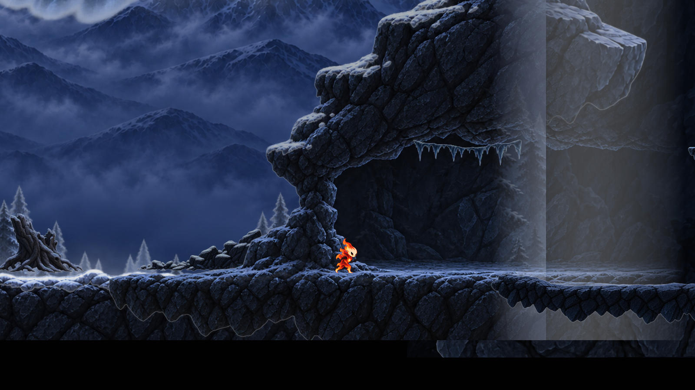
수정 전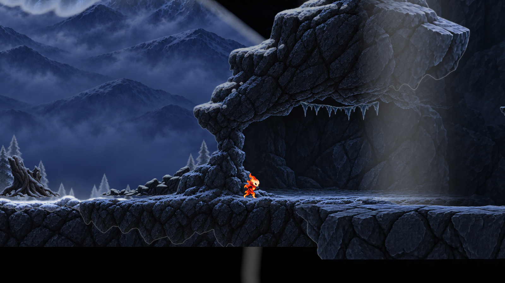
수정 후입구 경계
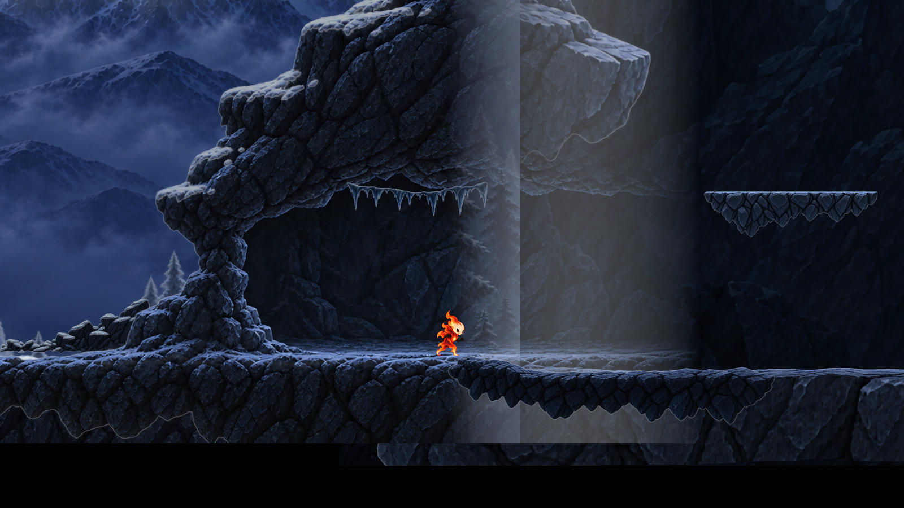
수정 전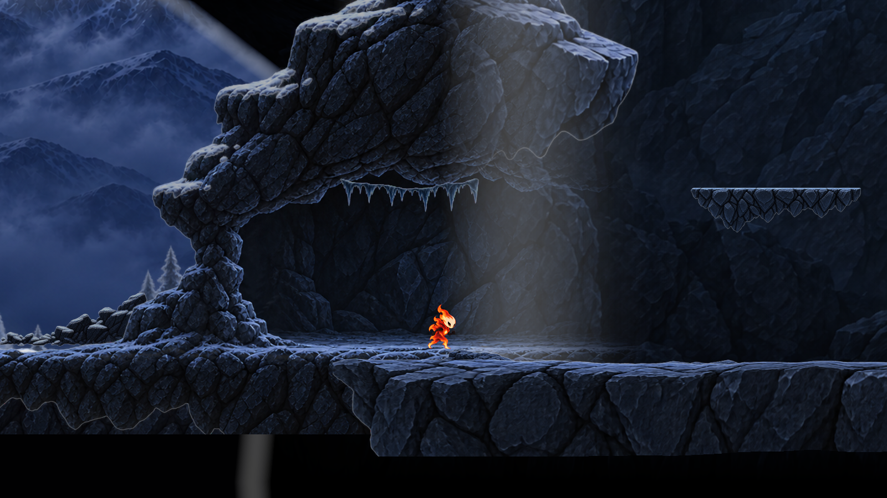
수정 후동굴 진입
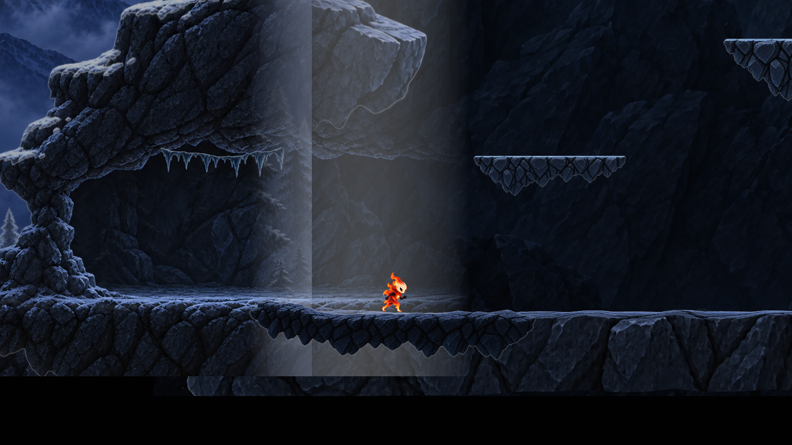
수정 전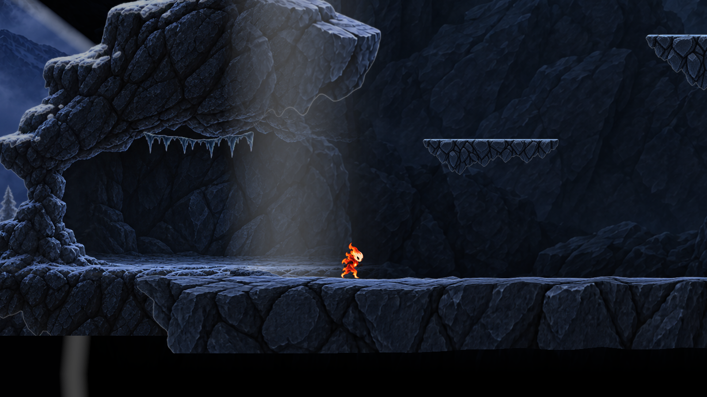
수정 후동굴 안쪽
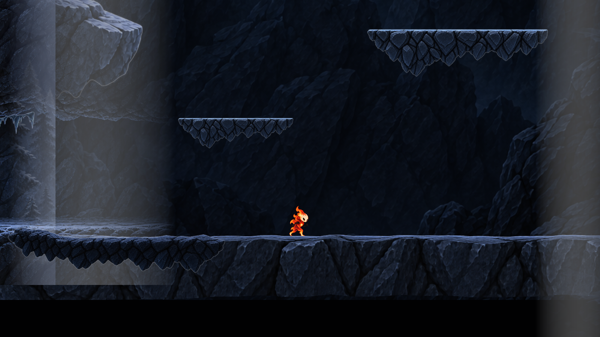
수정 전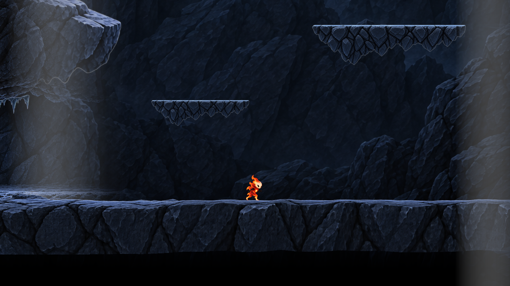
수정 후입구 상단
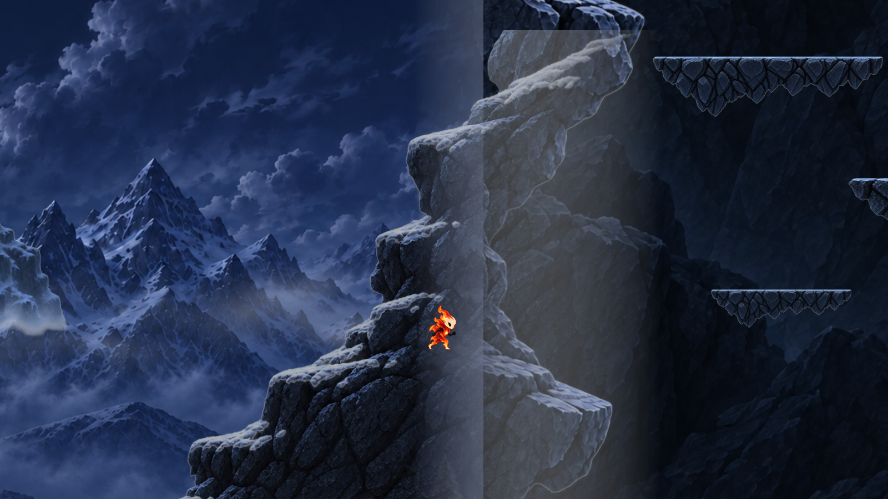
수정 전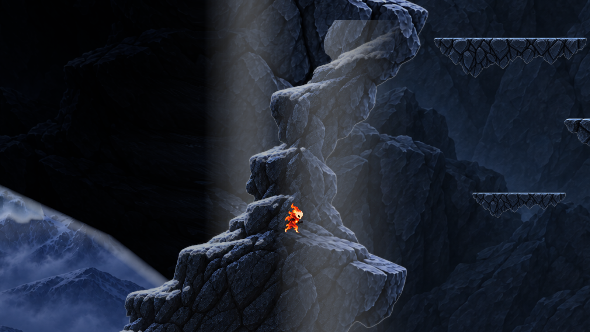
수정 후등반 중단
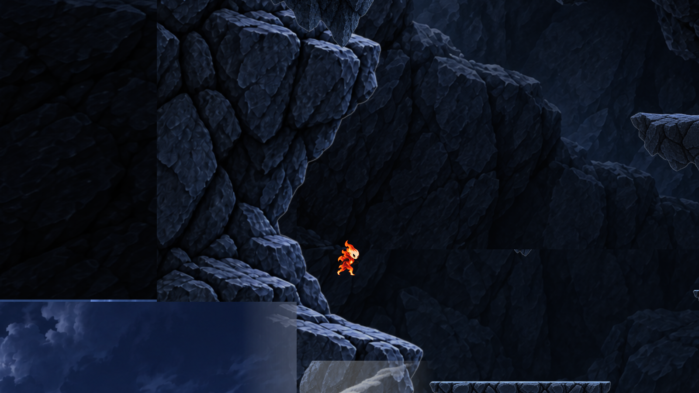
수정 전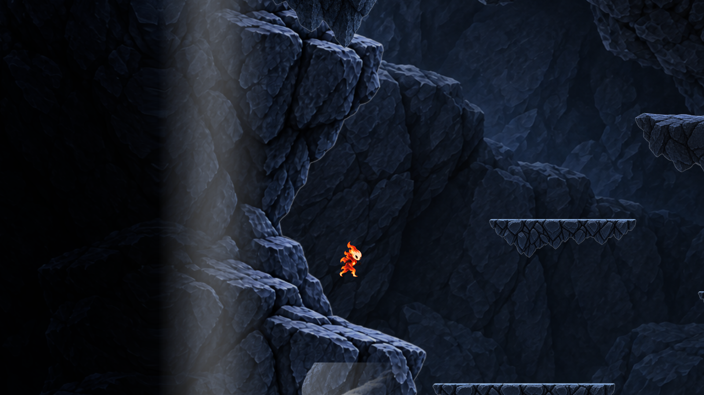
수정 후등반 상단 점프 높이
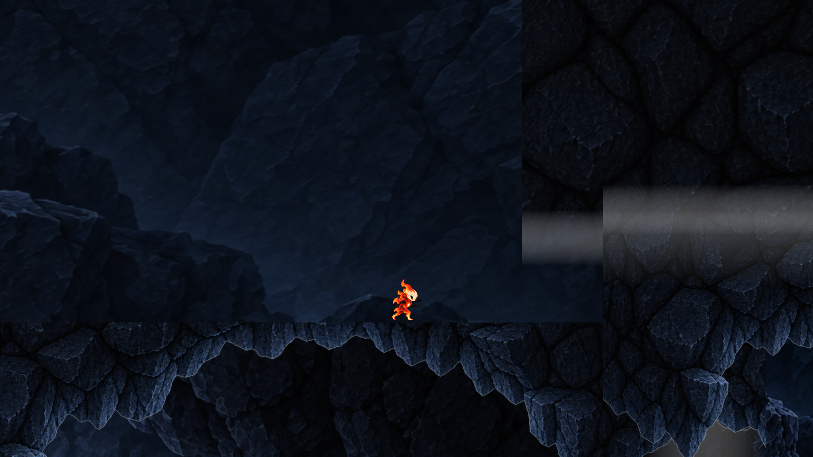
수정 전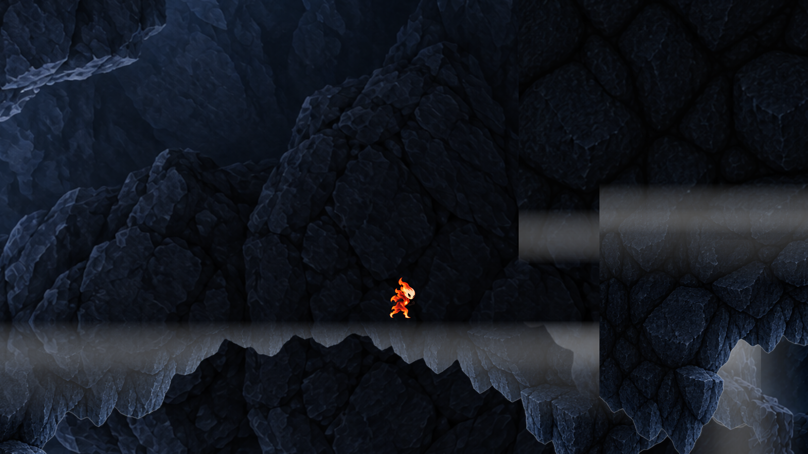
수정 후상단 통로 연결
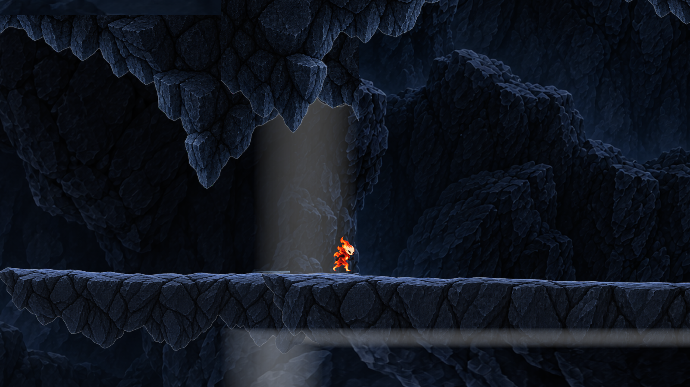
수정 전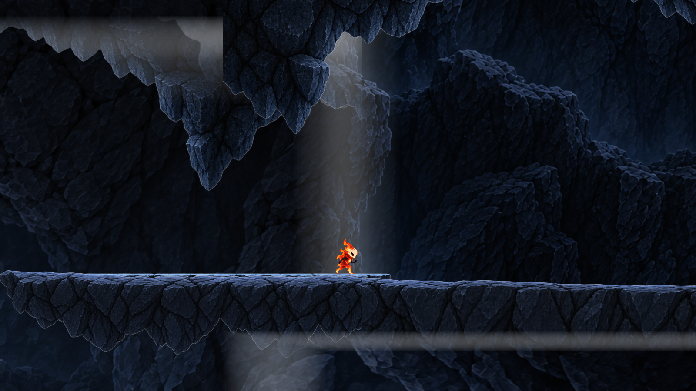
수정 후